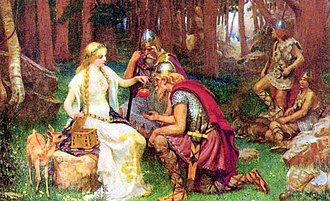

Mitologia germânica, também chamada de mitologia nórdica, mitologia viquingue ou mitologia
escandinava, é o conjunto de lendas dos povos escandinavos, especialmente durante a Era
Viking,
cujo conhecimento chegou aos nossos dias principalmente através das Edas islandesas do
século
XIII. A maioria das fontes escritas vieram dos povos escandinavos que se estabeleceram na
Islândia.
Com a cristianização dos países nórdicos — Dinamarca, Noruega, Suécia e Islândia —, as
antigas
religiões e mitologias foram sucessivamente substituídas e esquecidas. A exceção foi a
Islândia,
onde a nova religião substituiu a antiga, mas continuou todavia a ver a velha mitologia
nórdica
como uma herança cultural, transmitida oralmente e preservada em peças escritas.
Na Islândia daquela época, foi redigida a maioria das fontes escritas sobre a mitologia
nórdica.
A narrativa mitológica islandesa é a versão mais bem conhecida da mitologia comum germânica
antiga, que inclui também relações próximas com a mitologia anglo-saxônica. Por sua vez, a
mitologia germânica evoluiu a partir da antiga mitologia indo-europeia.
A mitologia nórdica é uma coleção de crenças e histórias compartilhadas por tribos do norte
da
Germânia (atual Alemanha), sendo que sua estrutura não designa uma religião no sentido comum
da
palavra, pois não havia nenhuma reivindicação de escrituras que fossem inspirados por algum
ser
divino. A mitologia foi transmitida oralmente principalmente durante a era Viquingue, e o
atual
conhecimento sobre ela é baseado especialmente nos Edas e outros textos medievais escritos
pouco
depois da cristianização.
A família é o centro da comunidade, podendo ser estreitamente relacionada com a
fertilidade-fecundidade quanto com a agressividade de um povo hostil e habituado a guerras,
em
uma sociedade totalmente rural que visa a prosperidade e a paz para si. Deste modo, a
religião é
muito mais baseada no culto do que no dogmatismo ou na metafísica, uma religiosidade baseada
em
atos, gestos e ritos significativos, muitas vezes girando em torno de festividades a certos
deuses, como Odin e Týr (identificado por alguns estudiosos como predecessor de Odin).

Os clãs de deuses
Os clãs de deuses
Há três grandes "clãs de divindades": os Æsir, os Vanir e os Elfos. A distinção entre o Æsir e o
Vanir é relativa, pois na mitologia os dois finalmente fizeram a paz após uma guerra prolongada,
ganha pelos Æsir. Entre os embates houve diversas trocas de reféns, casamentos entre os clãs e
períodos onde os dois clãs reinavam conjuntamente. Alguns deuses pertencem a ambos os clãs.
Alguns estudiosos especulam que esta divisão simboliza a maneira como os deuses das tribos
invasoras indo-europeias suplantaram as divindades naturais antigas dos povos aborígenes, embora
seja importante notar que esta afirmação é apenas uma conjectura. Outras autoridades (compare
Mircea Eliade e J.P. Mallory) consideram a divisão entre Æsir/Vanir simplesmente a expressão dos
nórdicos acerca da divisão comum Indo-Européia acerca das divindades, paralela aos deuses
Olímpicos e os Titãs da mitologia grega, e algumas partes do Maabárata.
Outros clãs de seres sobrenaturais
O Æsir e o Vanir são geralmente inimigos dos gigantes Jotuns (Eotenas ou Entas, em inglês
arcaico). Estes são comparáveis aos Titãs e aos Gigantes da mitologia grega e traduzidos
geralmente como "gigantes", embora trolls e demônios sejam sugeridos como alternativas
apropriadas. Entretanto, os Æsir são descendentes dos Iotnar e tanto os Æsir como os Vanir
realizaram diversos casamentos entre eles. Alguns dos gigantes são mencionados pelo nome no
Edas, e parecem ser representações de forças naturais. Há dois tipos gerais de gigante: gigantes
da neve e gigantes do fogo. Havia também elfos e anões e, apesar de seu papel na mitologia ser
bastante obscuro, normalmente são apresentados tomando o partido dos deuses
Além destes, há muitos outros seres supernaturais: Fenris (ou Fenrir) o lobo gigantesco, e
Jormungard, a serpente do mar que circula o mundo inteiro. Estes dois monstros são descritos
como primogênitos de Loki, o deus da mentira, e de um gigante. Hugin e Munin (pensamento e
memória), são criaturas mais benevolentes, representadas por dois corvos que mantêm Odim, o deus
principal, informado do que está acontecendo na terra; Ratatosk, o esquilo que atua como
mensageiro entre os deuses e Yggdrasil, a árvore da vida, figura central na concepção deste
mundo.
Assim como muitas outras religiões politeístas, esta mitologia não apresenta o característico
dualismo entre o bem e o mal da tradição do oriente médio. Assim, Loki não é primeiramente um
adversário dos deuses, embora se comporte frequentemente nas histórias como o adversário
primoroso contra o protagonista Thor, e os gigantes não são fundamentalmente malignos, apesar de
normalmente rudes e incivilizados. O dualismo que existe não é o mal contra o bem, mas a ordem
contra o caos. Os deuses representam a ordem e a estrutura visto que os gigantes e os monstros
representam o caos e a desordem.